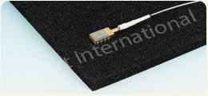
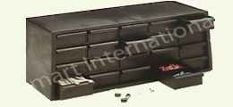
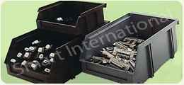
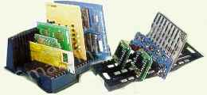
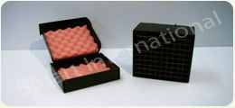
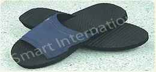
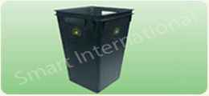
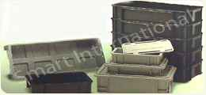

This bag is made from conductive polyethylene. It has excellent mechanical property and static shielding capability. As the package and content are kept at equal potential, the accumulated charges can be drained away safely without damaging the content. |
|||
| • Material thickness | : | 4 mils (0.1 mm) | |
| • Surface resistivity | : | <= 1 x 10 power 5 Ohm / (ASTM D257) | |
| • Surface resistance | : | <= 1 x 10 power 4 Ohm (EOS/ESD S11.11) | |
A wide range of conductive foams with different density and cell-structure for specific applications. This carbon impregnated material provides permanent and uniform protection for ESD sensitive devices. It is ideal for long term packaging of semiconductor components because of its low ionic contamination. |
 | ||
| • Thickness | : | 5mm and 10mm | |
The conductive component rack provides a systematic storage of electrostatic sensitive devices. It consists of 20 small drawers housed in a rectangular rack. |
 | ||
| • Surface resistivity | : | : < = 1 x 10 power 5 ohms/ (ASTM D257, Conductive type) | |
| • Surface resistivity | : | <= 1 x 10 power 4 ohms / (EOS/ESD S11.11, Conductive Type) | |
| • Size of external rack | : | 379 mm x 151 mm x 200 mm | |
| • Size of drawer | : | 780mm x 150mm x 40mm | |
Ideal for electrostatic sensitive device storage, can be used with assembly rack to create an organized grounded storage system. |
 | ||
| • Surface resistivity | : | < = 10 power 5 ohms / (ASTM D257, Conductive type) | |
| • Surface resistance | : | < = 10 power 4 ohms (EOS/ESD S11.11 Conductive type) | |
The conductive PC Rack is specially designed to solve your PCBs storage and handling problems. |
 | ||
| • Surface resistively | : | <=10 power 5 Ohm/sq. (ASTM D257, Conductive type) | |
| • Surface resistance | : | <=10 power 4 Ohm (EOS/ESD S11.11, Conductive type) | |
Black Conductive Rubber Mat Specifications :
Description Single layer conductive mat, specially designed for ESD sensitive area. |
|||
| Unit | Black Layer | ||
| Hardness (Shore A) | Point | 70 +/- 5 | |
| Tensile Strength | Kg/ cmf | 70 min | |
| Ultimate Elongation | % | 250 min | |
| Tear | Kg/ cm | 25 | |
| Volume Resistivity | Ω -cm | 10 power 3- 10 power 5 | |
| Surface Resistivity | Ω / | 10 power 3- 10 power 5 | |
| Static Decay Rate | Second | < 0.1 | |
ESD carton boxes are designed to provide the “ Faradays Cage Effect” With buried conductive pattern layer in addition to providing the necessary protection against mechanical shocks during transportation of critical ESD sensitive parts. Further the ESD boxes can be provided with antistatic or conductive cushioning layer inside to provide additional protection to shock-sensitive ESD parts. These boxes are custom designed thereby ensures safe transportation of critical items. |
 | ||
This slipper has a two piece construction of PVC top and a unique conductive PU sole. This design allows human body static charges to dissipate via the conductive sole to the floor, and it does not utilize any copper foil for electrical conductivity • Non-Marking, Non-Slip Sole • Machine Washable • Excellent Electrical Properties |
 | ||
| Materials | : | Sole : Conductive PU Top : PVC | |
| Surface Resistivity | : | Sole : 1.0 × 10E4 to 1.0 × 10E6 ohm/sq | |
| Resistance to ground | : | 1.0 × 10E4 to 1.0 × 10E6 ohm/sq | |
| Color | : | Sole :Black Top : Navy Blue | |
| Sizes | : | 210, 220, 230, 240, 250, 260, 270, 280 and 290mm | |
A large and convenient bin with complete ESD compatability. Capacity 40 litres. |
 | ||
Moulded Conductive Containers :
Injection moulded containers are available in conductive and non-conductive types. They are durable, stackable and come in various designs and dimensions for all kinds of storage application. |
 | ||
| • Surface resistivity | : | < = 1 x 105 Ohm / (ASTM D257, Conductive type) | |
| • Surface resistance | : | < = 1 x 104 Ohm (EOS/ESD S11.11, Conductive type) | |